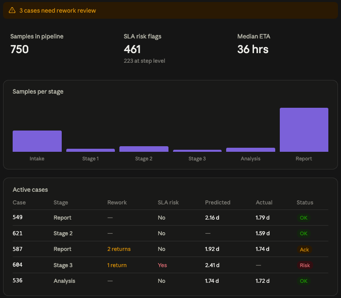

Clinical Genomics Workflow Monitoring
Industry-Sponsored Senior Design Project · UT Austin Department of Biomedical Engineering
Overview
A tumor-informed sequencing assay is only as useful as the speed at which its result reaches a clinician. The biology can be exquisitely sensitive and the answer still arrive too late to change a treatment decision. That gap is an operations problem rather than a molecular one, and it is invisible to the assay itself.
Our team built a lab operations platform that simulates, monitors, and predicts the movement of clinical samples through a high-throughput genomics testing workflow. The system generates realistic synthetic sample data, transforms it into structured analytics products, predicts turnaround time for samples currently in flight, and surfaces bottlenecks, rework, and at-risk cases on a dashboard built for operators to read at a glance.
The Problem
A high-volume clinical lab produces an enormous quantity of operational exhaust: every sample logs a timestamp at every station, and every quality-control failure logs a return to a prior step. The data exists. What did not exist was a way to read it forward. Delays were identified after they had already consumed the turnaround budget, and bottlenecks were diagnosed retrospectively rather than anticipated.
The sponsor's need was a way to model the end-to-end journey of a clinical test sample so that operations staff could see problems developing instead of confirming them afterward.
There was a structural obstacle. Real workflow data is bound to protected health information, which makes it unavailable for a student project and slow to work with even inside the company. That constraint shaped the entire architecture, and it is why the system begins with a simulator rather than a database connection.
What We Built
Workflow Simulator
The assay pipeline is represented as a directed acyclic graph, with nodes as process states and weighted edges as transitions. Samples enter at sample preparation or primer rearray and progress toward sequencing, with quality-control checkpoints that can route a sample backward into rework.
The simulator generates synthetic workflow data that reproduces the shape of real lab behavior, including queueing, stochastic branching, rework events, and turnaround-time variation, without touching patient data.
Hybrid Database Architecture
Operational and analytical workloads require different database patterns, so we split the system into two paths. PostgreSQL serves as the transactional store for live sample state and transition history, while Amazon Redshift serves as the analytical warehouse for historical aggregation and model training.
dbt transformations define the data pipeline through layered models, moving from staging to intermediate to marts and a unified data model. This gives the platform traceability from raw workflow events to dashboard metrics.
Predictive Model
A linear regression model estimates time-to-close for active cases using features available at prediction time, including site, day of week, hour of case open, and elapsed time from case open to DNA extraction.
We deliberately excluded granular per-step durations because those values are only known after a step is complete. Including them would have inflated model performance while creating data leakage, producing a model that looked better in testing but would fail on live cases.
Lab Operations Dashboard
The dashboard presents pipeline state as a single readable surface for lab operators, showing sample flow through the pipeline, rework flags, SLA risk, active case status, median estimated time to completion, and predicted versus actual turnaround time.

This is a rendered mockup built to illustrate the dashboard's layout and functionality, not a screenshot of the original system. All values, case numbers, and details shown are synthetic and do not reflect real patient or laboratory data.
What I Learned
- Preventing data leakage is a design decision made before any model is trained, not a diagnostic run afterward. The features that would have made our metrics look best were exactly the ones unavailable at prediction time.
- A negative result can be more useful than a positive one when it correctly identifies the binding constraint. Learning that more data would not help told us where to spend effort.
- Splitting hot and cold data paths taught me that database architecture is about access patterns, not just storage. A live dashboard and a historical training job are different problems.
- Building against synthetic data is a legitimate engineering strategy under privacy constraints, but the model learns the simulator's assumptions rather than real lab behavior.
- Dashboard design changed how I think about output. Information that an operator has to hunt for during a shift may as well not have been computed.